Identita domu
Nárožní dům u odbočky ramene k nám. Dvouletky. Karta KSPPOP popisuje 831–823 jako dvojdům se společnou fasádou a vchodem; skica (586 | 823 roh | 831) i GIS budova 1121 s popiskem 823 souhlasí. Hranici obou domů na společné fasádě určuje svod (asi 0,2 m od hranice parcel v GIS); společný vchod hned vpravo od svodu patří do 831. Projekt z 30. let ukazuje jiné rozmístění otvorů, model se drží fotografie.
Použité prameny: fotografie cp_831_002 (celá fasáda dvojdomu, rektifikovaná 19,67 m), fotografie boční fasády cp_823_001 (10,35 m), fotografie cp_823,671_001 a cp_586,823_001, skica KSPPOP cp_823_001, karta cp_831_002, plán Tusl z 30. let (řez, Rückansicht), GIS půdorys 1121.
Kde je dům na fotografiích
Dům je na snímku v červeném rámečku, sousední domy jsou popsány čísly a každý otvor má ID, podle kterého se počty otvorů kontrolují proti modelu. Kliknutím otevřete větší obrázek.

přízemí 3 okna (G1 širší), patro 4 okna (U1+U2 pár nad G1); vchod je v 831

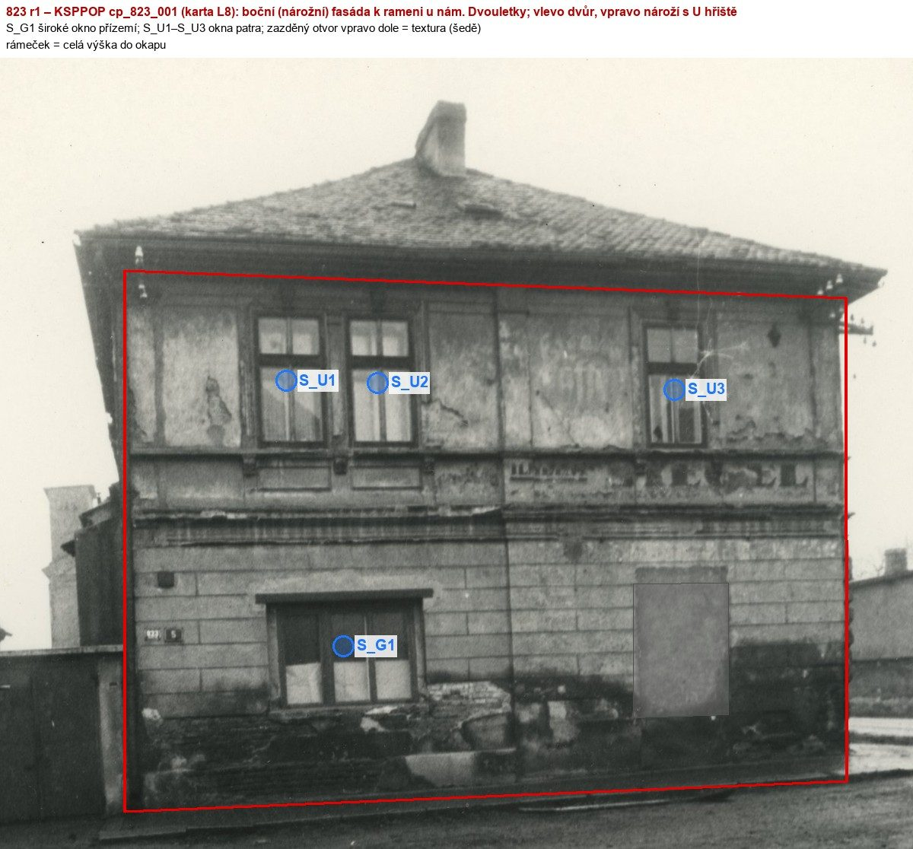
zazděný otvor vpravo dole není otvor (textura)
Přílohy v databázi (12)
Všechny přílohy struktury 823 v databázi Libuše, načtené živě 25. 10. 2026 (jen pro čtení) a otevřené. Kliknutím otevřete větší náhled.

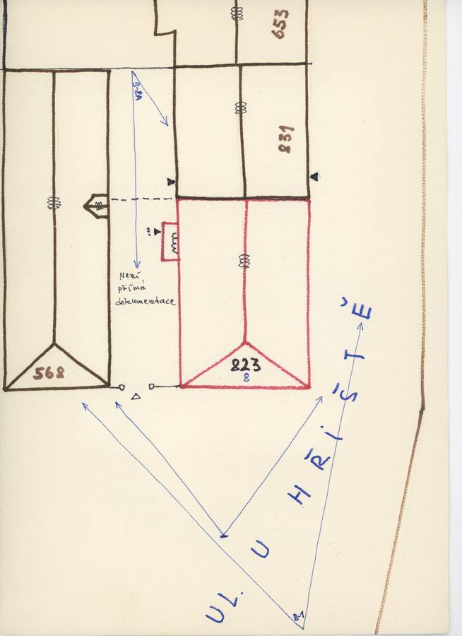
plán / výkres
SHA-256 5961eb47ead8…

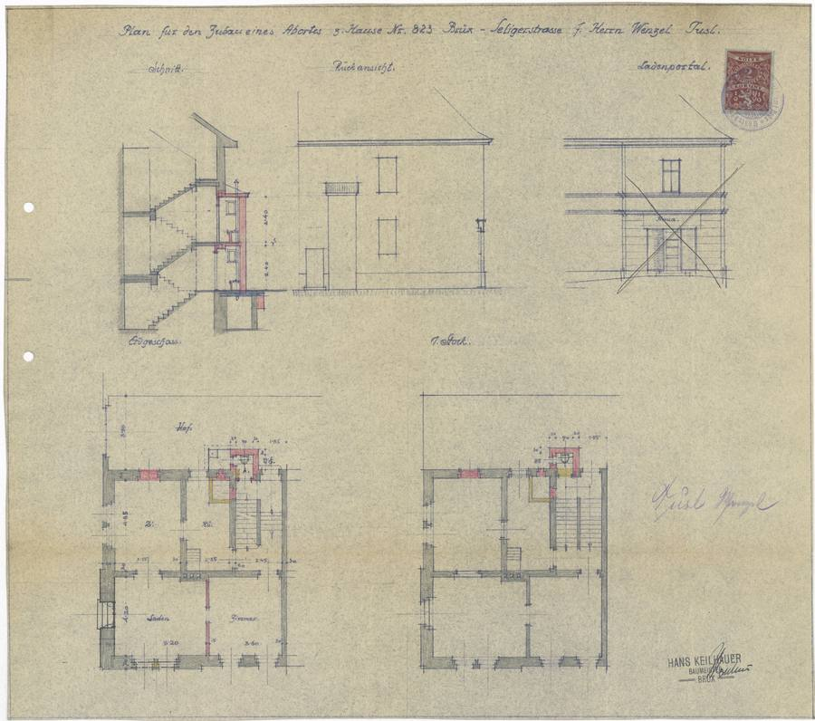
plán / výkres
SHA-256 62009b6c1bf6…

fotografie
SHA-256 0816ed4d134d…

fotografie
SHA-256 5b5c32c06362…

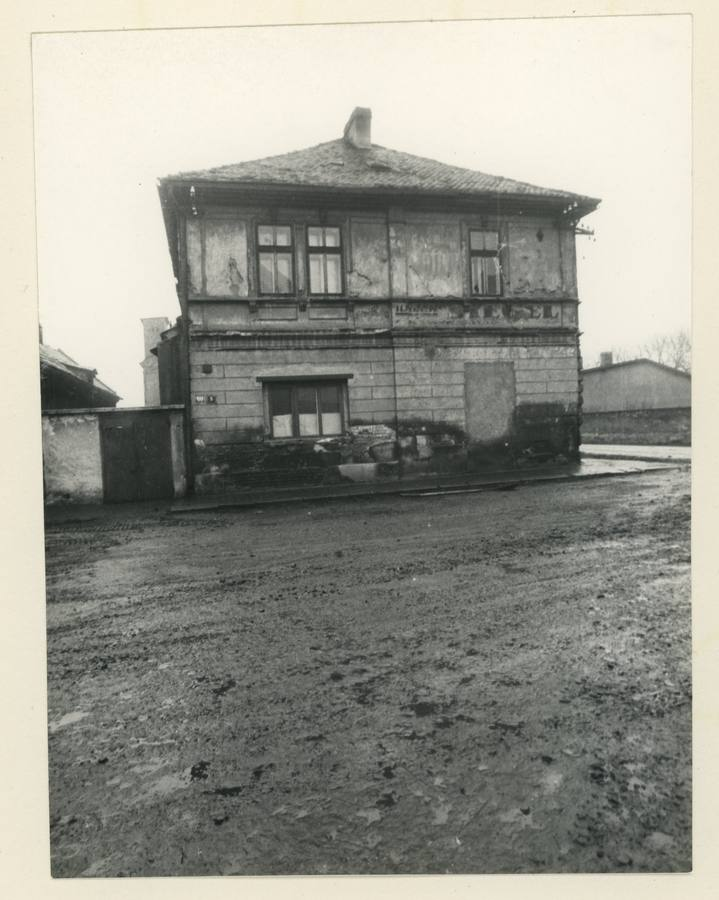
fotografie
SHA-256 ee009dcebd93…

archivní karta
SHA-256 d96645e711f7…

archivní karta
SHA-256 8eb35b578bce…

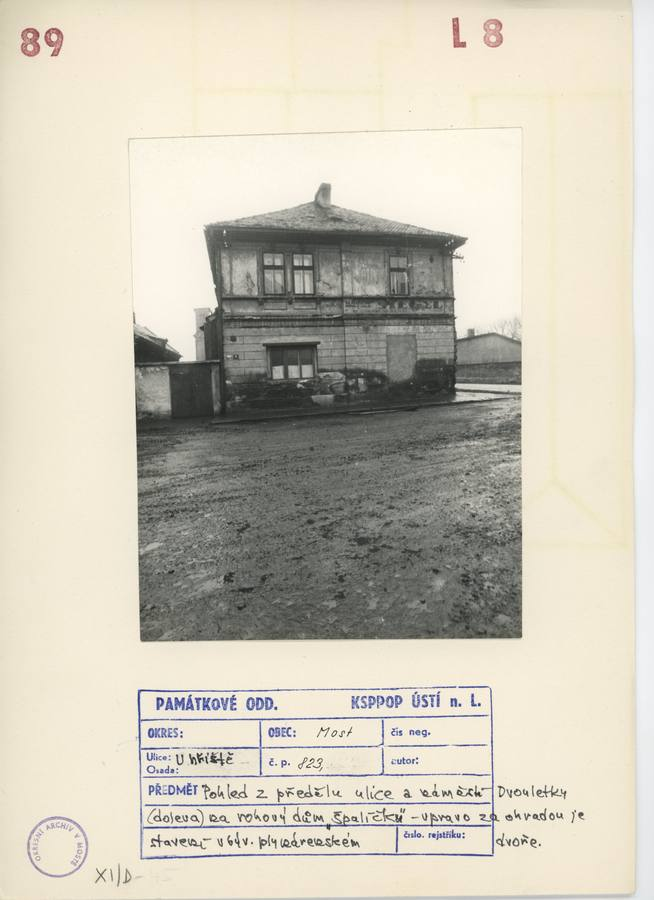
archivní karta
SHA-256 152d808a1d02…

kopie bez tagu (1920 × 1080)
SHA-256 a29675292eac…

kopie bez tagu (1920 × 1080)
SHA-256 af74a3a8ac4f…

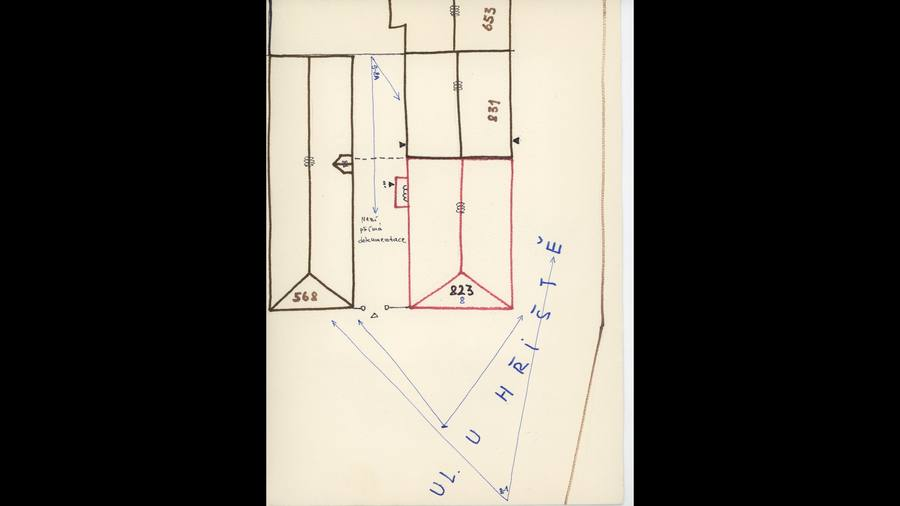
kopie bez tagu (1920 × 1080)
SHA-256 9e0457b7f1d8…

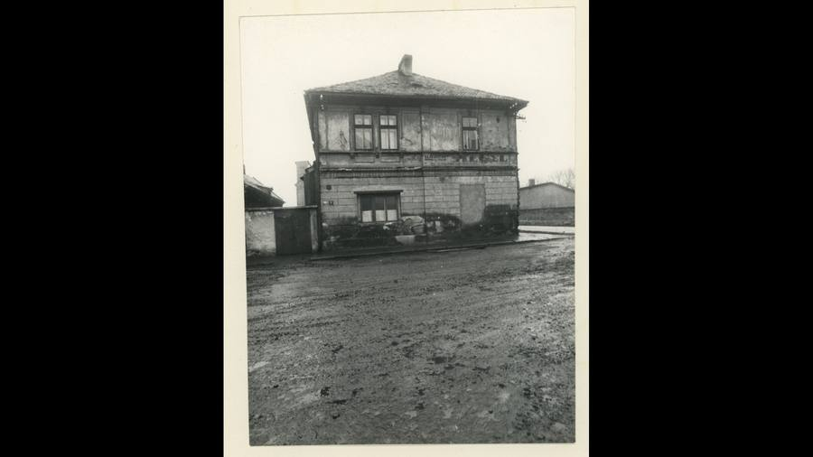
kopie bez tagu (1920 × 1080)
SHA-256 4fe3751a43b1…
Geometrie
| Revize geometrie | r2 |
|---|---|
| Úsek ulice | S2 · severozápadní strana VSV ramene |
| Poloha | GIS budova 1121, popisek 823, ulice U hřiště (1938 Seligerova) |
| Šířka průčelí | 9,18 m |
| Výška okapu | 7,45 m (odhad) |
| Podlaží | 2 |
| Střecha podle pramenů | valbová střecha nad nárožím, hřeben podél ulice pokračuje nad 831; sklon asi 36° podle řezu plánu Tusl (provizorně) |
| Otvory / vikýře v modelu | 11 / 0 |
| Polygonů | 256 |
Kontrolní pohledy

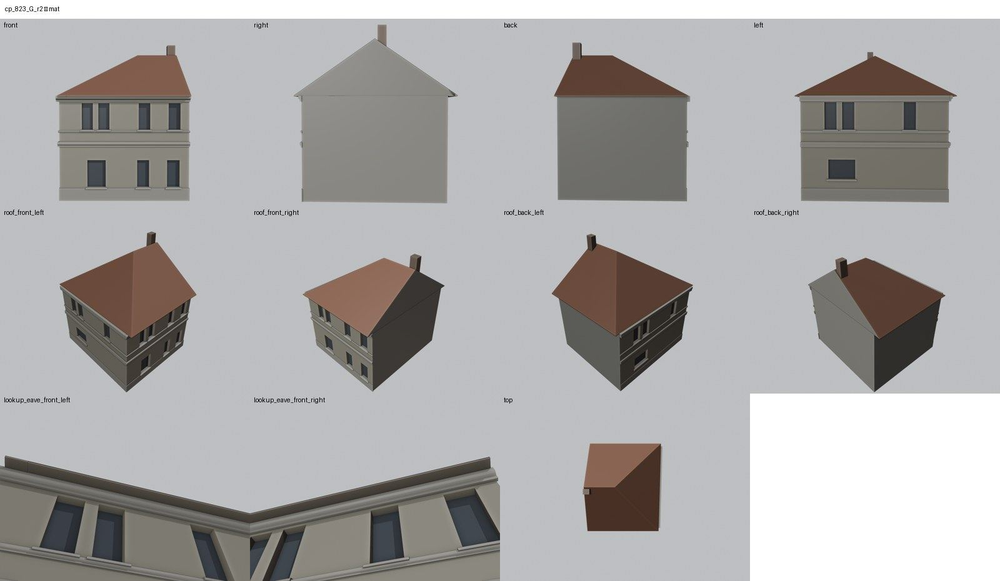

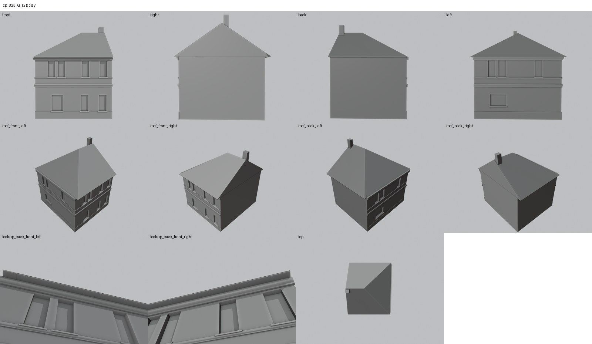

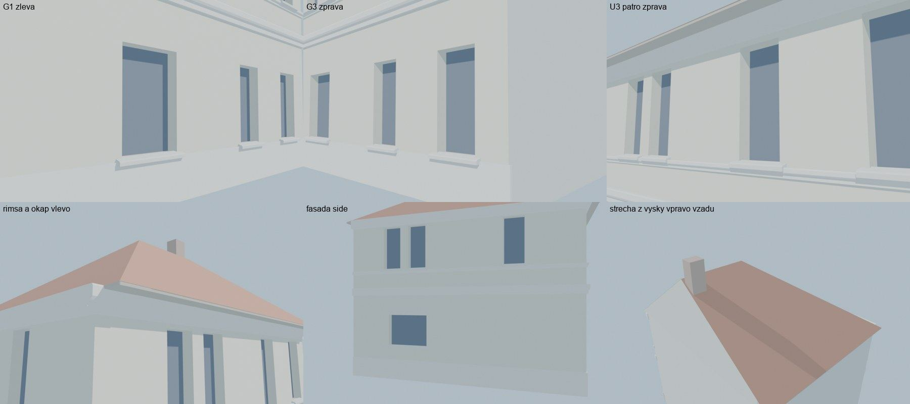

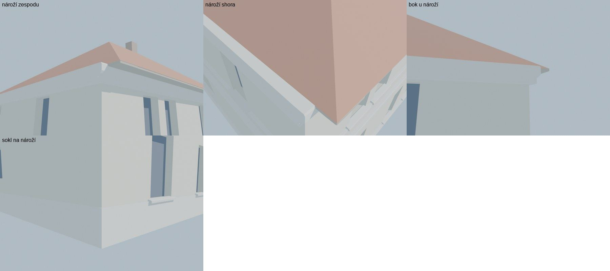
Kontrola modelu
| Brána geometrie (automaticky) | v pořádku |
|---|---|
| Uzavřené podkroví (GLB) | v pořádku: zásahy paprsků 1, nekryté zdivo 0,00 m², střecha nad prázdnem 0,00 m² |
| UV mapování | v pořádku: 0 zkolabovaných ploch z 256 |
| Síť | v pořádku |
| Počty otvorů proti pramenu | souhlasí |
| Vizuální kontrola | prošla (Claude (Opus 5.5), 2026-10-25) |
| Kontrola střechy | prošla |
- all main: polohy z rektifikace cp_831_002 (19,67 m), marks v ramecku sedi na otvorech (souhlasí)
Textury
zatím bez textur
Až Codex dodá texturovaný model, objeví se v prohlížeči nahoře volba Textury (Codex).
Hypotézy
Vše níže je model_hypothesis, provisional, locked: false.
- výška okapu 7,45 m a hřebene 11,35 m je z rektifikace obou fasád, svislé měřítko je odhad
- zazděný otvor v boční fasádě patří do textury (lícuje s omítkou), není modelován jako otvor
- poloha komínu na dělicí zdi s 831 je odvozena z perspektivy dvou fotografií
- dvorní průčelí je bez otvorů; Rückansicht plánu je jen orientační
- bosáž přízemí, nadokenní římsy patra a nápis „…EL“ v pásu patří do textury
Technický zápis hypotéz v plánu modelu (revize r2, bez diakritiky)
- vyska okapu a hrebene (7,45 / 11,35 m) z rektifikace - vertikalni meritko odhadem, provisional
- zazdeny otvor v bocni fasade (s 7,0-8,5) = textura (licuje s omitkou), neni modelovan jako otvor
- komin na delici zdi s 831 (poloha z perspektivy dvou fotografii)
- dvorni pruceli bez otvoru (Rueckansicht planu 1930s jen orientacne)
- bosaz prizemi, nadokenni rimsy patra, napis ...EL v pasu = textura (Codex)
Historie revizí modelu
- r1 25.10.2026: prvni stavba - narozni dum dvojdomu 823|831, otvory z rektifikovanych fotografii KSPPOP obou ulicnich fasad, valba nad narozim
- r2 25.10.2026: rimsy prulici fasady prodlouzeny pres naroží (x0 = -hloubka), aby zakryly konce boxu bocni fasady (QA detail r1: neuzavrene konce rims na narozi); sokl i na bocni fasade
Soubory
- Geometrie čp. 823, GLB (revize r2)
- Pracovní model: F:\MOST\output\u_hriste_street_claude_2026-10-25\houses\cp823\r2\cp_823_G_r2.blend
- Plán modelu: F:\MOST\output\u_hriste_street_claude_2026-10-25\houses\cp823\geometry_plan.json